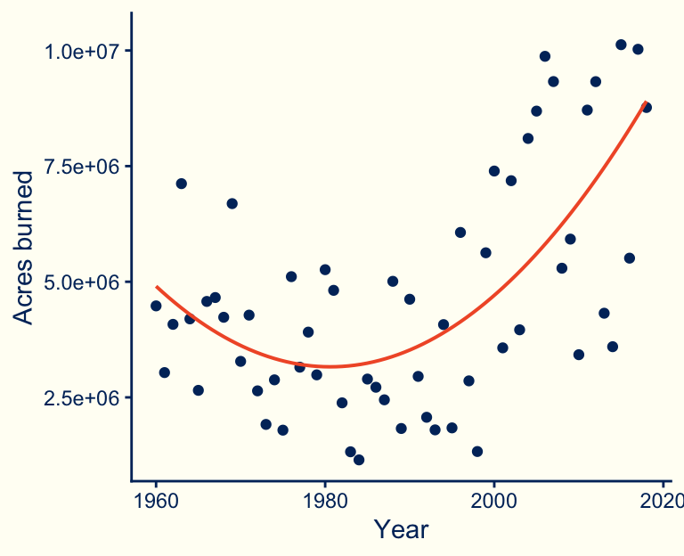
Stat 230: Applied Regression Analysis
The National Interagency Coordination Center at the National Interagency Coordination Center compiles annual wildland fire statistics for federal and state agencies.
This information is provided through Situation Reports, which have been in use for several decades.
Our goal is to model the number of acres burned over the years
Data source: https://www.nifc.gov/fireInfo/fireInfo_stats_totalFires.html
\(\mu \lbrace y | x \rbrace = \beta_0 + \beta_1 x\)
Is the fit reasonable?
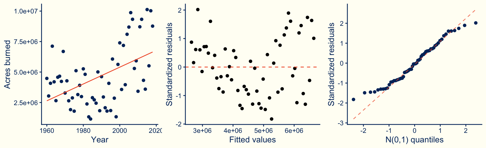\(\mu \lbrace y | x \rbrace = \beta_0 + \beta_1 x^2\)
Is the fit reasonable?
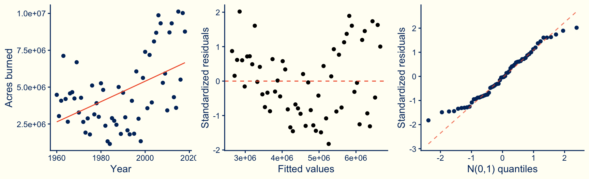\(\mu \lbrace y | x \rbrace = \beta_0 + \beta_1 x + \beta_2x^2\)
Is the fit reasonable?
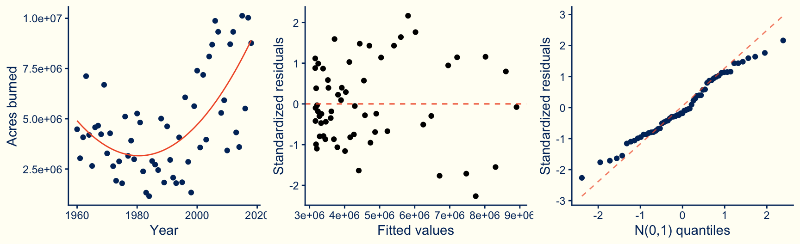\[Y_i = \beta_0 + \beta_1 x_{i} + \beta_2 x_{i}^2 + \cdots + \beta_k x_{i}^k + \varepsilon_i, \quad \varepsilon_i \overset{iid}{\sim} N(0, \sigma)\]
Assumptions — same as in SLR
\(\mu\{Y|x_i\}\), is a linear function
For each \(x_i\), the sub-population of responses is normally distributed
The standard deviation for each sub-population is \(\sigma\)
Independent observations
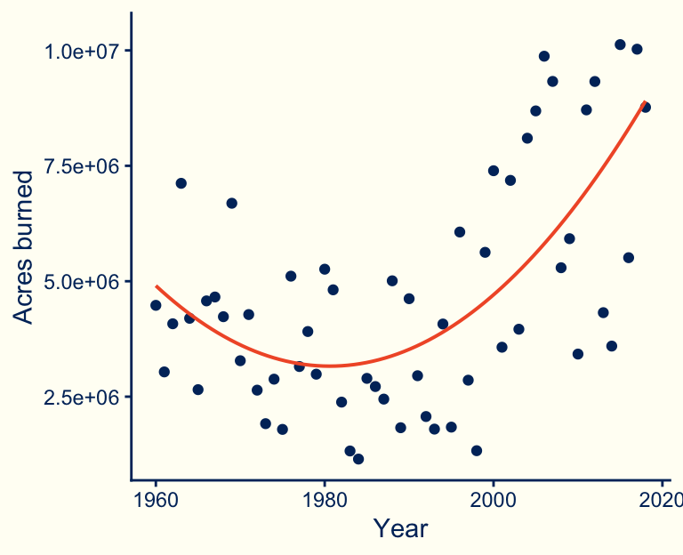
Focus on the expected change in \(y\) for a specific one-unit increase in \(x\)
e.g. change in acres burned from 1985 to 1990
e.g. change in acres burned from 2005 to 2010
Inference uses the same t-based tools as SLR, but with
\[\widehat{\sigma} = \sqrt{\dfrac{{\sum_{i=1}^n e_i^2}}{n - (k+1)}}\]
i.e. the degrees of freedom of the t-distribution change
Hypotheses: \(H_0: \ \beta_j = \#\) vs. \(H_a: \ \beta_j \underset{>}{\overset{<}{\ne}} \#\)
Test statistic: \(t = \dfrac{\hat{\beta}_j - \#}{SE(\beta_j)}\)
Reference distribution: \(t\) distribution with d.f. = \(n-(k+1)\)
p-value: Area in the tail(s) specified by \(H_a\)
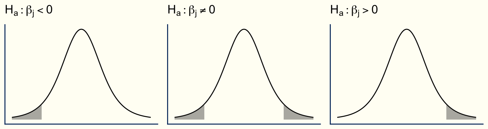
\(\widehat{\beta}_j \pm t^*_{n-(k+1)} \cdot SE(\widehat{\beta}_j )\)
| Term | Estimate | SE | Lower | Upper |
|---|---|---|---|---|
| (Intercept) | 16109806404 | 3793719340 | 8510073345 | 23709539462 |
| Year | -16264428 | 3814896 | -23906583 | -8622273 |
| I(Year^2) | 4106 | 959 | 2185 | 6027 |
Would a higher-order polynomial (e.g. cubic, quartic, quintic) provide a better fit to the wildfire data?
Work through that example on the handout with your neighbors
Prior to 1983, sources of these figures are not known, or cannot be confirmed, and were not derived from the current situation reporting process. As a result the figures prior to 1983 should not be compared to later data.
— NIFC
https://www.nifc.gov/fireInfo/fireInfo_stats_totalFires.html]
High-order polynomial regression models will over-fit your data (i.e. pick up on peculiarities specific to your one sample from the population)
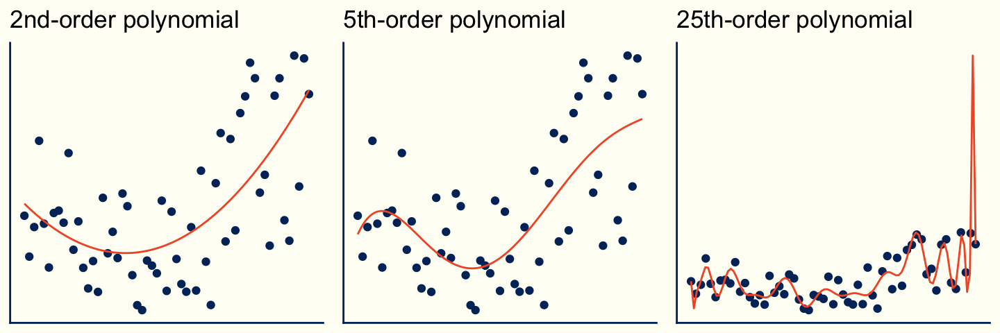Polynomial regression is one example of the multiple regression model, but there are numerous ways to incorporate multiple predictors into a model
\(\mu \lbrace Y | X \rbrace = \beta_0 + \beta_1 x + \beta_2 x^2\)
\(\mu \lbrace Y | X \rbrace = \beta_0 + \beta_1 x_1 + \beta_2 x_2\)
\(\mu \lbrace Y | X \rbrace = \beta_0 + \beta_1 x_1 + \beta_2 x_2 + \beta_2 x_1 x_2\)
Use the mean of Y as the prediction for all observations
\(\mu \lbrace Y | X \rbrace = \beta_0\)
Leaves a lot of variability unexplained
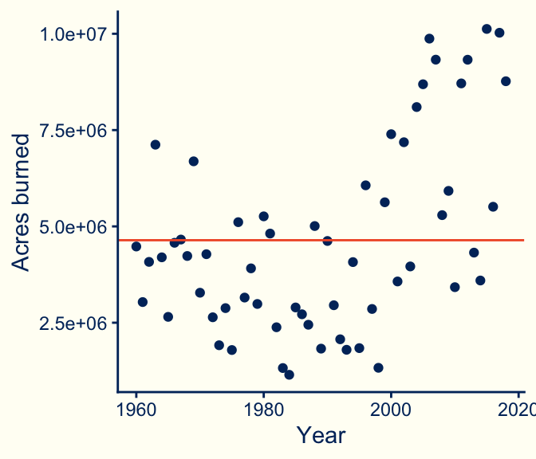
\(SD(Y) = 2.465548\times 10^{6}\) cm
\(\mu \lbrace Y | X \rbrace = \beta_0 + \beta_1x + \beta_2 x^2\)
Using a predictor explains more variability
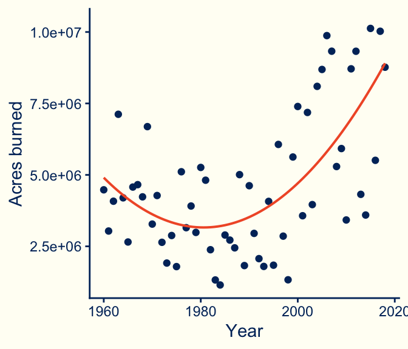
\(SD(Y) = 1.9098377\times 10^{6}\) cm
\({\rm SSTotal} = \sum(Y_i - \bar{Y})^2\)
Measures the overall variability in \(Y\)
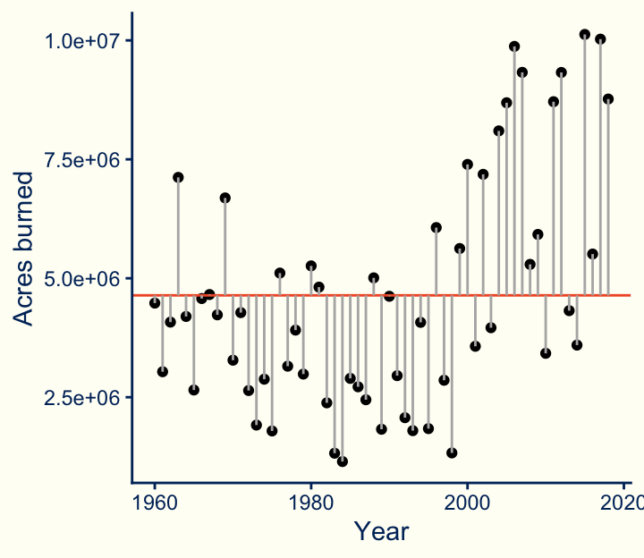
\({\rm SSResidual} = \sum(Y_i - \widehat{Y}_i)^2\)
Measures the variability unexplained by the model
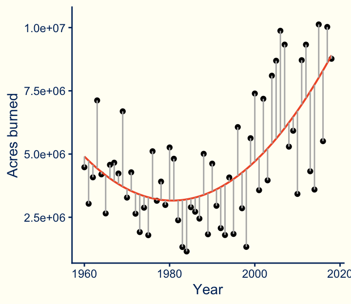
Measures the variability explained by the model
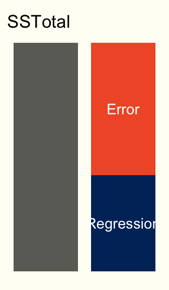
\({\rm SSRegression} = SSTotal - SSError\)
Proportion of the total variation in \(y\) explained by the linear regression model
\(\begin{split} R^2 &= 0.421\\ &= \dfrac{SSRegr}{SST} \\ &= 1 - \dfrac{SSE}{SST} \end{split}\)
\(R^2\) only addresses how close the fitted values are to the data, on average. It says nothing about the validity of the model.
Suppose we wish to compare a quadratic and quartic model for the wildfires data set:
How do we decide which model is preferred?
Can we compare \(R^2\) values?
Can we run individual t-tests?
Full model
\(\mu \lbrace Y | X \rbrace = \beta_0 + \beta_1 x + \beta_2 x^2 + \beta_3 x^3 + \beta_4 x^4\)
Reduced model
\(\mu \lbrace Y | X \rbrace = \beta_0 + \beta_1 x + \beta_2 x^2\)
Hypotheses
\(H_0:\ \beta_{3} = \beta_4 = 0\)
\(H_a:\) at least one \(\beta_j \ne 0\), \(j=3,4\)
Test statistic
\[ \begin{split} F &= \frac{(R^2_{\text{full}} - R^2_{\text{reduced}}) / d}{(1 - R^2_{\text{full}}) / df_{\text{full}}}\\ &= \frac{(\text{SSR}_{\text{full}} - \text{SSR}_{\text{reduced}}) / d}{\text{MSE}_{\text{full}}}\\ &= \frac{(\text{SSE}_{\text{reduced}} - \text{SSE}_{\text{full}}) / d}{\text{MSE}_{\text{full}}} \end{split} \]
where
The F-statistics follows an \(F\) distribution with \(\text{df}_{full} - \text{df}_{reduced}\) and \(n-p-1\) d.f.
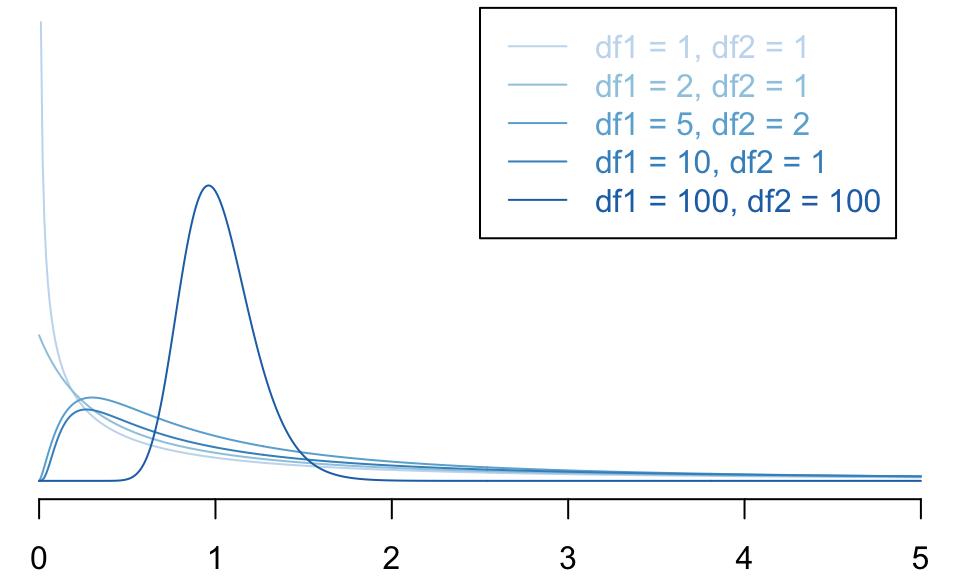To obtain upper-tail areas: 1 - pf(stat, df1, df2)
| model | r.squared | df | df.residual | nobs |
|---|---|---|---|---|
| Full | 0.453 | 4 | 54 | 59 |
| Reduced | 0.421 | 2 | 56 | 59 |
\[ F = \frac{(R^2_{\text{full}} - R^2_{\text{reduced}}) / d}{(1 - R^2_{\text{full}}) / df_{\text{full}}} = \frac{(0.453 - 0.421) / 2}{(1 - 0.453) / 54} \approx 1.58 \]
There is no evidence that the quartic model is an improvement over the quadratic model (\(F=4.467\), \(df = 2, 54\), \(p = 0.215\)).
Call:
lm(formula = Acres ~ poly(Year, 4), data = wildfires)
Coefficients:
Estimate Std. Error t value Pr(>|t|)
(Intercept) 4641410 245955 18.871 < 2e-16 ***
poly(Year, 4)1 9025270 1889218 4.777 1.40e-05 ***
poly(Year, 4)2 8177004 1889218 4.328 6.55e-05 ***
poly(Year, 4)3 -1194695 1889218 -0.632 0.5298
poly(Year, 4)4 -3177711 1889218 -1.682 0.0983 .
Residual standard error: 1889000 on 54 degrees of freedom
Multiple R-squared: 0.4534, Adjusted R-squared: 0.4129
F-statistic: 11.2 on 4 and 54 DF, p-value: 1.096e-06Output was edited to fit on one slide
anova() to compare the two models. The first argument should be the reduced model.
Analysis of Variance Table
Model 1: Acres ~ poly(Year, 2)
Model 2: Acres ~ poly(Year, 4)
Res.Df RSS Df Sum of Sq F Pr(>F)
1 56 2.0426e+14
2 54 1.9273e+14 2 1.1525e+13 1.6146 0.2084